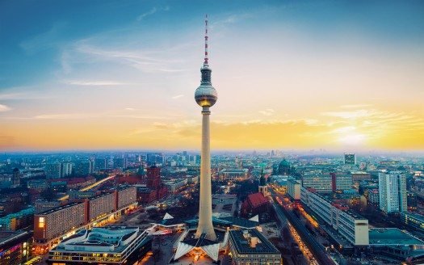

BERLIN
is the capital city of Germany and one of the 16 states (Länder) of the Federal Republic of Germany. Berlin is the largest city in Germany and has a population of 4.5 million within its metropolitan area and 3.5 million from over 190 countries within the city limits.
Berlin is best known for its historical associations as the German capital, internationalism and tolerance, lively nightlife, its many cafés, clubs, bars, street art, and numerous museums, palaces, and other sites of historic interest. Berlin's architecture is quite varied. Although badly damaged in the final years of World War II and broken apart during the Cold War, Berlin has reconstructed itself greatly, especially with the reunification push after the fall of the Berlin Wall in 1989.

It is now possible to see representatives of many different historic periods in a short time within the city centre, from a few surviving medieval buildings near Alexanderplatz, to the ultra modern glass and steel structures at Potsdamer Platz. Because of its tumultuous history, Berlin remains a city with many distinctive neighbourhoods. Brandenburger Tor is a symbol of division during the world war, which now shows German reunification. It was built after the Acropolis in Athens and was completed in 1799 as the royal city-gate.
Germany was later on divided into east and west, In August 13,1961, East Germans permanently closed the border between East and West. The wall had 45,000 sections of reinforced concrete and included 79 miles of fencing, nearly 300 watchtowers and 250 guard dogs. Still more than 5,000 people escaped to freedom.
People
Berlin is a relatively young city by European standards, dating to the thirteenth century, and it has always had a reputation as a place filled with people from elsewhere. It may seem tough to find someone born and raised here! This is part of Berlin's charm: it never gets stuck in a rut. A certain uneasy détente still exists between some former residents of East and West Berlin (and Germany). Wessi evolved as a derogatory nickname for a West German; its corollary is Ossi. The implication here is that after reunification, the West Germans automatically assumed the way they do things is the right way, and the way the Easterners should start doing it, too. Westerners got a reputation for being arrogant. They saw the Easterners as stubborn Communist holdouts interested only in a handout from the "rich West."
German is of course the main language in Berlin but you can easily find information in English and sometimes in French. Due to the football World Cup in 2006 all public transportation staff got language training and should be able to help you in English (although probably with a strong German accent). If you seem to be lost or hesitating in a public transport station a member of staff could come to your assistance but don't count on that. You can easily approach a group of (preferably young) bystanders and ask for advice in English.
Get in By Plane
Tegel International Airport (ICAO: EDDT, IATA: TXL) located in the north-west of the city is the main airport for international carriers (British Airways, Air France-KLM, United, LOT, etc.) and a hub for domestic flights on Lufthansa and Air Berlin. The original airport was designed as a hexagon but today two other terminals try to handle the flights of Air Berlin (most flights in Terminal C) and other budget carriers (mostly in terminal D). All flag carrier flights leave from the main terminal building A (Terminal B nowadays contains just the bus gates of Terminal A for Non-Schengen flights), and is also where all airlines lounges are. The airport might close on 2017 depending on the construction progress. Buses from Tegel International Airport operate to Hauptbahnhof (bus TXL [118]), and S+U Zoologischer Garten (buses X9 and 109) for the standard ticket fare . It takes around 45 minutes to Alexanderplatz - it is much quicker to get off at Hauptbahnhof or Zoologischer Garten and change to the S-Bahn (the bus ticket remains valid for this). (TXL takes less than 10 minutes to get to S-Bahn station Beusselstraße.) Caution! Do not take any train to the "Tegel railway (S-Bahn) station", which is not connected to the airport, but rather to the suburban village called Tegel. It is not possible to walk or to otherwise get easily to the airport from that station. The nearest train stations are Jakob-Kaiser Platz on the U-Bahn line U7, which is 5 minutes from the airport with bus X9/109, Kurt-Schumacher Platz on the U6, 10 minutes from the airport with bus 128, and Beusselstraße S41/S42 (the ring) connected to the airport with an express bus . Tegel International Airport does not have any railway station. Any indication to a Tegel railway station refers to the remote S-Bahn station, even if railway staff at stations in other cities might tell otherwise. Various providers offer taxi and limousine service at Airport Tegel. As a normal paying guest, just take a taxi from the "official" stand. There is no chance getting a cheaper deal. Pay the official tariff, and persist on the taxi driver to switch on the meter. "Special deals" outside the meter are rare in Berlin. The Taxi service is extremely regulated here: Taxi driver unions and courts are - successfully - eager to ban any services which are not licensed according to the vigorous taxi licensing regulations from driving paying guests, and airport authorities will not allow any non-licensed car pick up clients at the terminals. Thus, there are no "deals" available at the terminals. There might be pre-booked limousine services available to businesses which frequently transfer people from the airport to the city. Schönefeld (ICAO: EDDB, IATA: SXF) This airport — formerly serving the capital of the GDR — southeast of Berlin is the base for most low-cost airlines (e.g. easyJet, Ryanair and Germanwings) and charter flights in addition to traffic from Eastern Europe. The airport is served by the S-Bahn and regional trains. The station is a short walk, under a covered well lit walkway opposite terminal A/B. Trains run from here on the S-Bahn into the city until 1:30 AM so most late night arrivals will be covered. There are also less regular but faster regional trains that cost the same and stop at these major train stations too. In S-Bahn and regional trains between the airport (zone C) and the city (zone A,B), the public transport ticket (zones A,B,C for €3.40) can be used. Stamp the ticket to validate it before boarding.